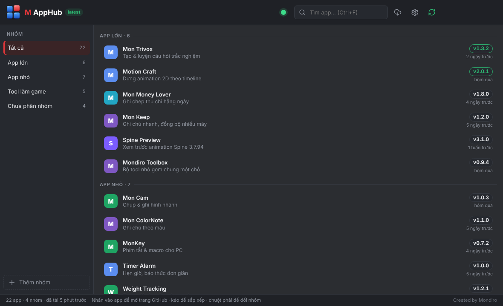

Dashboard quản lý app trên GitHub · dark theme chuẩn Mondiro · dữ liệu trong ảnh là ví dụ (tên repo lấy từ GitHub của bạn, mô tả & version là mẫu).
Windows · 1180×720 · header chính là thanh tiêu đề (3 nút cửa sổ nằm góc phải, cùng màu)

Cách hoạt động
Tên app, mô tả 1 dòng, version lấy tự động từ GitHub (tên repo, mô tả repo, tag Release mới nhất). Có thể sửa tên/mô tả hiển thị ngay trong app nếu muốn.
Nhóm tự tạo (App lớn, App nhỏ, Tool làm game…), chuột phải / giữ-kéo app để đổi nhóm, kéo để sắp xếp.
Viền xanh ở version = vừa ra bản mới trong 3 ngày. Dòng dưới là "bao lâu trước".
Nhấn vào app → mở trang GitHub / trang Release của app đó.
Chấm xanh góc phải = đã tải xong danh sách từ GitHub (vàng = đang tải, đỏ = lỗi mạng). Nút mây = tải lại.
Nút mũi tên xoay = kiểm tra bản cập nhật của chính M AppHub; đã mới nhất thì hiện latest cạnh tên app.